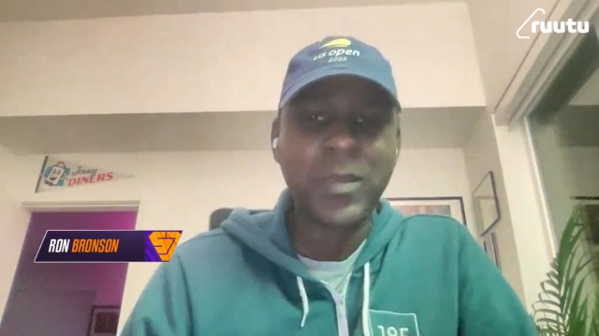
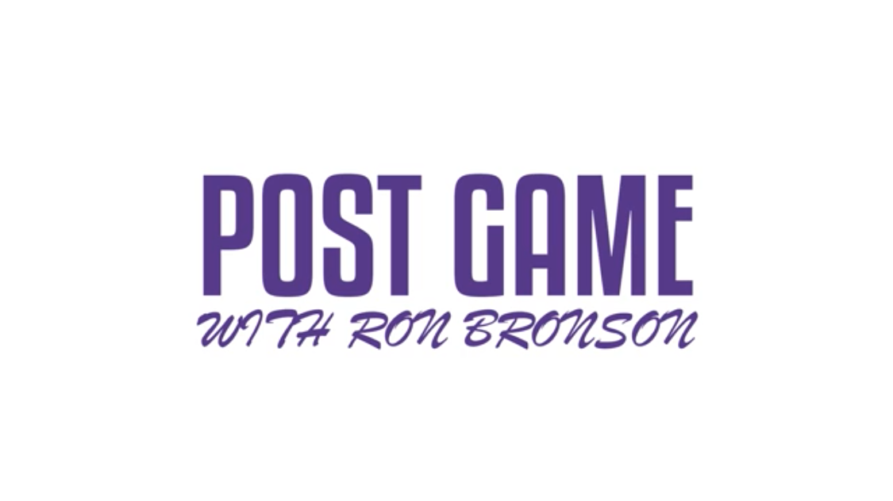

Mallo
The first advanced-analytics site for pesäpallo, Finland’s national baseball variant. It adds the sabermetrics layer the sport never had, something I’d wanted for as long as I’ve followed it.
Ensimmäinen pesäpallon edistyneen analytiikan sivusto. Sarjaan suhteutetut tunnusluvut, DARKO-tyyliset ennusteet, lajin ensimmäiset julkaistut kenttäkertoimet ja Monte Carlo -pudotuspelitodennäköisyydet — rakennettu virallisen tulospalvelun datasta.

I’ve followed pesäpallo, Finland’s national baseball variant, for well over a decade. Somewhere along the way the fandom turned into something bigger: I’ve talked the sport up on podcasts and other people’s shows; I gave a conference talk on what it taught me about game design; and a couple of years ago I was on the pre- and post-game show for the first-ever English-language Superpesis telecast. I eventually made the pilgrimage to Finland to watch it in person. Superpesis, the top league, wrote about the trip. For an American, I’ve been in this a while. If you want the origin story, I wrote up how a guy from America starts following Finnish baseball.


I’m also a lifelong baseball fan, and I’ve been reading sabermetrics since the ’90s, when I was buying Baseball America and Baseball Weekly off the rack years before any of this went mainstream. Pesäpallo and baseball are cousins: the same instincts in a different sport. I’d always wanted a way to hold both interests in the same hand. Mallo puts both in one place, and it comes from someone who fell for baseball reading box scores as a kid.
Before Mallo there was no advanced-analytics site for pesäpallo anywhere, even though the sport keeps decades of granular records. Mallo borrows openly from the analytics sites I grew up on (DARKO for projections, Baseball Savant for percentile fingerprints, FanGraphs for league-indexed rate stats, Baseball-Reference for career lines and comps) and translates each idea into the grammar of the Finnish game.
Mallo runs on real data from the official results service (Pesistulokset), which turned out to be a documented JSON API with per-player, per-match rows of roughly 82 fields each: hits split by target base, advancement as batter and as runner, turns at bat, defensive position, and match context down to the stadium, weather, temperature, and attendance. Coverage reaches back to the 1940s, with granular stats to 1990. Mallo ingests the current Superpesis season and refreshes on every deploy.
Stats that fit the sport
Finnish media publish counting stats and a handful of percentages. Mallo keeps the traditional line (kunnarit, lyödyt, tuodut, tehot) and adds honest denominators and league context. Rate stats are computed against the attempts that actually happened, then indexed to the league. TEHO+ is the headline stat (100 is league average, era- and division-adjusted in the spirit of OPS+ and wRC+), with a park-adjusted kTEHO+ alongside it. Every qualified player gets a Baseball-Savant-style percentile fingerprint: diverging red-to-blue bars that read as a skill profile at a glance.
Projections and context
PARE is the projection engine. It asks DARKO’s question of pesäpallo: how much of a hot streak is real? Every game a player has ever played is weighted by exponential decay, blended toward the league mean with empirical-Bayes shrinkage that leans harder on small samples, with per-stat decay and prior strengths fitted by walk-forward scoring. A 28-to-33-game season is short, but each game comes with unusually rich recorded context, so the observed stats stay the headline, adjusted for the conditions they happened in: the first published park factors for the sport (kenttäkertoimet), weather effects, and opponent strength to come.
Also on the site
- Standings & playoff odds: real Superpesis points, with Monte Carlo playoff odds simulated over the remaining schedule and re-run at weekly cutoffs to draw a season-long odds chart.
- Similarity scores: Baseball-Reference-style comps: nearest neighbors over standardized rate stats, 1000 means identical.
- Pesäpallo baseball: a rank-preserving quantile map from Superpesis percentiles onto MLB distributions, so a player’s season reads as a shareable English-language line for people who know baseball but not pesäpallo.
- Every league, first-class: men’s and women’s Superpesis and the lower tiers all build their own navigation; the women’s game is never buried behind a filter.
How it’s built
The core is Python over SQLite (a metrics layer, the projection engine, a context model, and a Monte Carlo simulator), with a small web UI on top and charts drawn in vendored D3 without a CDN. The demo league generates every stat line from known latent talent so the tests can assert the projections and park factors recover it. It’s a directed agent build, documented in after-action reports in the repo and released under the AGPL. Mostly it’s a fan project, the site I always wanted to exist.